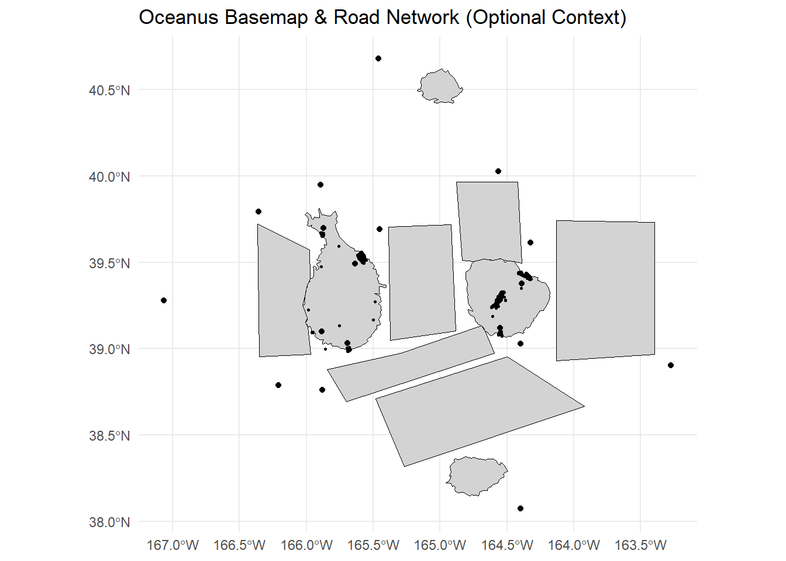

This Quarto document shows how to optionally load and visualize the Oceanus geographic basemap and the Oceanus road network. Note: neither is required to solve the core VAST Challenge, but they can help contextualize any spatial or network analyses you perform.
1. Load Libraries
library(sf) # Spatial data handling
Linking to GEOS 3.12.1, GDAL 3.8.4, PROJ 9.3.1; sf_use_s2() is TRUE
library(jsonlite) # JSON parsinglibrary(dplyr) # Data manipulation
Attaching package: 'dplyr'
The following objects are masked from 'package:stats':
filter, lag
The following objects are masked from 'package:base':
intersect, setdiff, setequal, union
The following objects are masked from 'package:dplyr':
as_data_frame, groups, union
The following objects are masked from 'package:stats':
decompose, spectrum
The following object is masked from 'package:base':
union
library(ggraph) # Network plotting
Warning: package 'ggraph' was built under R version 4.4.3
2. Optional: Read Oceanus Basemap (GeoJSON)
# The basemap was created via geopandas and shapely in Python.oceanus_map <-st_read("data/oceanus_map.geojson")
Reading layer `oceanus_map' from data source
`C:\Users\jia_y\OneDrive - Singapore Management University\Semester 6\ISSS608 VAA\jylau91\ISSS608-VAA-Project\data\oceanus_map.geojson'
using driver `GeoJSON'
Simple feature collection with 29 features and 6 fields
Geometry type: GEOMETRY
Dimension: XY
Bounding box: xmin: -167.0654 ymin: 38.07452 xmax: -163.2723 ymax: 40.67775
Geodetic CRS: WGS 84
# Ensure it's in WGS84 (lon/lat)if (st_crs(oceanus_map)$epsg !=4326) { oceanus_map <-st_transform(oceanus_map, 4326)}# Inspect the basemap features and CRSprint(oceanus_map)
Simple feature collection with 29 features and 6 fields
Geometry type: GEOMETRY
Dimension: XY
Bounding box: xmin: -167.0654 ymin: 38.07452 xmax: -163.2723 ymax: 40.67775
Geodetic CRS: WGS 84
First 10 features:
Name Description
1 Suna Island Large island of Oceanus
2 Thalassa Retreat Smaller island of Oceanus
3 Makara Shoal A small, generally unregulated island
4 Silent Sanctuary A small bird sea-bird sanctuary
5 Cod Table
6 Ghoti Preserve
7 Wrasse Beds
8 Nemo Reef
9 Don Limpet Preserve
10 Tuna Shelf
type Kind Activities
1 Entity.Location.Region Island Residential
2 Entity.Location.Region Island Residential
3 Entity.Location.Region Island Recreation
4 Entity.Location.Region Island Tourism, Research
5 Entity.Location.Region Fishing Ground Commercial fishing
6 Entity.Location.Region Ecological Preserve Research, Tourism, Recreation
7 Entity.Location.Region Fishing Ground Commercial fishing
8 Entity.Location.Region Ecological Preserve Recreation, Tourism
9 Entity.Location.Region Ecological Preserve Recreation, Tourism
10 Entity.Location.Region Fishing Ground Commercial fishing, Sport fishing
fish_species_present
1
2
3
4
5 Cod/Gadus n.specificatae, Birdseye/Pisces frigus, Beauvoir/Habeas pisces
6 Wrasse/Labridae n.refert, Beauvoir/Habeas pisces, Helenaa/Pisces satis, Offidiaa/Piscis osseus
7 Wrasse/Labridae n.refert, Birdseye/Pisces frigus, Beauvoir/Habeas pisces
8 Wrasse/Labridae n.refert, Tuna/Thunnini n.vera, Birdseye/Pisces frigus, Beauvoir/Habeas pisces, Helenaa/Pisces satis
9 Tuna/Thunnini n.vera, Birdseye/Pisces frigus, Beauvoir/Habeas pisces, Helenaa/Pisces satis, Sockfish/Pisces foetida
10 Tuna/Thunnini n.vera, Birdseye/Pisces frigus, Beauvoir/Habeas pisces, Harland/Piscis sapidum
geometry
1 POLYGON ((-166.0111 39.7766...
2 POLYGON ((-164.4052 39.4614...
3 POLYGON ((-165.0429 40.5959...
4 POLYGON ((-164.8069 38.3748...
5 POLYGON ((-164.1321 39.7432...
6 POLYGON ((-164.4198 39.9655...
7 POLYGON ((-165.3874 39.7059...
8 POLYGON ((-165.2935 38.9732...
9 POLYGON ((-165.9767 39.3923...
10 POLYGON ((-165.4815 38.7093...
3. Optional: Read Road Network (JSON)
# road_map.json follows a node-link structure with longitude/latitude coordinates.road_json <-fromJSON("data/road_map.json")# Convert list to tibbleroad_nodes <-as_tibble(road_json$nodes)# Inspect column names to confirm coordinate fieldsprint(names(road_nodes)) # Expect 'longitude' and 'latitude'
# Read edges if presentif (!is.null(road_json$links)) { road_edges <-as_tibble(road_json$links)} else {message("No 'links' element in road_map.json") road_edges <-NULL}
4. Convert Road Nodes to sf Points
# Use 'longitude' and 'latitude' fields directlyroad_sf <-st_as_sf( road_nodes,coords =c("longitude", "latitude"),crs =4326,remove =FALSE)
5. Plotting the Contextual Map
g <-ggplot()if (exists("oceanus_map")) { g <- g +geom_sf(data = oceanus_map, fill ="lightgrey", color ="black")}if (exists("road_sf") &&nrow(road_sf) >0) { g <- g +geom_sf(data = road_sf, size =0.5)}g +labs(title ="Oceanus Basemap & Road Network (Optional Context)") +theme_minimal()

6. Building the Road Network Graph
7. Next Steps
Core analysis: Apply spatial/network algorithms on your VAST Challenge data (e.g., centrality, community detection, spatial clustering).
Contextual mapping: Use st_join or st_distance to relate your challenge features to these contextual layers.
Custom metrics: Compute betweenness(g_net) or closeness(g_net) for road importance, and overlay results spatially.